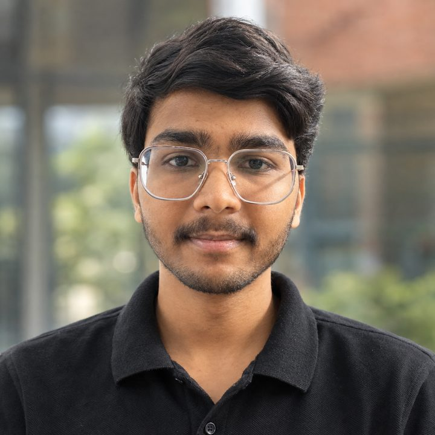
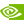
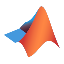

Hi, I'm
Aman Sharma
Engineering autonomous robots
Robotics & autonomous systems, Materials Engineering at IIT Jodhpur.
I like owning a robot from the first CAD sketch to the moment it moves on its own: the frame, the wiring, the firmware and the code that makes it decide.

Jodhpur, IndiaWhere I've worked, competed and built
Projects
Things I've built with my teams. Open one to see the problem, how it works and what I did.
Experience
Internship, club work and competitions.
Roles
Robotics & Systems Engineering Intern
Built a custom haptic device and used it to control a Universal Robots arm, first in simulation and then on the real robot.
Core Member
On the society's core team. Our builds include the autonomous mobile robot and the Not Rocket Science missile tracker.
Mentor, first-year project
Mentoring first-year students as they build a gesture-controlled bot: an IMU on an ESP32 reads the tilt of your hand, and the bot drives where you point.
B.Tech, Materials Engineering
Materials and mechanics as the base. Robotics is where I spend the rest of my time.
Competitions
ISRO IROC-U 2026
ISRO's robotics challenge for university teams. We built an autonomous drone with a docking and charging station, designed to fly where GPS is not available.
Advanced to Round 3Toolkit
Sorted by which part of the robot it touches.
Mechanical
Frames, mounts, enclosures- SolidWorks
- Fusion 360
- 3D printing
- Laser cutting
- Hardware assembly
Electronics & firmware
Boards, sensors, motors- ESP32
 Arduino
Arduino Raspberry Pi
Raspberry Pi
NVIDIA Jetson- IMUs
- GPS NEO-6M
- RPLIDAR
- Motor drivers & encoders
- micro-ROS
Robotics software
Mapping, navigation, flight- ROS 2 Humble
- Nav2
- SLAM Toolbox
- RViz
- PX4
- ArduPilot
- QGroundControl
- Genesis
Perception
Seeing and measuring OpenCV
OpenCV- ArUco
- YOLOv8
- SAM2
- MiDaS depth
- Optical flow
- GStreamer
Control & simulation
Making it behave
MATLAB- Simulink
- PID
- Kinematics
- Quaternions
- Unity (VR)
Languages & tools
Everyday Python
Python C / C++
C / C++ C#
C# Ubuntu Linux
Ubuntu Linux Git
Git- LaTeX
Say hi.
Open to internships, research and robotics collaborations. If you're building something with motors and sensors, I'd like to hear about it.
amansharma44p@gmail.com